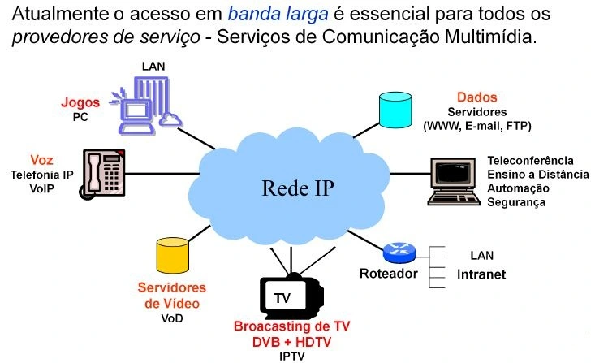

Historia da internet_
Esse é o nosso trabalho trimestral
A origem da Internet remonta aos anos 1960, quando o projeto ARPANET foi lançado nos Estados Unidos pelo Departamento de Defesa dos EUA. A ARPANET foi a precursora da Internet moderna e foi desenvolvida para permitir a troca de informações entre instituições de pesquisa e militares. A primeira mensagem foi enviada em 29 de outubro de 1969, de uma universidade para outra, marcando o nascimento da Internet.

SILVA, Daniel Neves. "História da internet"; Brasil Escola. Disponível em: https://brasilescola.uol.com.br/informatica/internet.htm. Acesso em 23 de abril de 2024
A internet foi criada por Tim Berners-Lee com o objetivo de conectar pessoas e compartilhar informações de forma rápida e eficiente. Inicialmente utilizada para pesquisas acadêmicas e militares nos Estados Unidos, a internet se expandiu ao longo do tempo e se tornou uma ferramenta essencial na comunicação.
https://www.techtudo.com.br/noticias/2021/06/quem-criou-a-internet-veja-perguntas-e-respostas-sobre-historia-da-web.ghtml
A evolução da internet na sociedade tem sido notável, a forma como nos comunicamos, trabalhamos, aprendemos e nos divertimos. a internet facilitou o acesso as informações conectou pessoas ao redor do mundo, o mercado eletrônico, entretenimento, educação e saúde. No entanto, também trouxe desafios, como privacidade. A evolução contínua da internet continua moldando o mundo para tecnologia.
https://www.linkdesignbrasil.com/a-evolucao-da-internet-ate-os-dias-atuais/
A internet está mais presente do que nunca, com bilhões de usuários conectados diariamente para várias finalidades. Tecnologias como 5G e inteligência artificial estão em ascensão, enquanto a privacidade online e a segurança são preocupações crescentes.
https://www.portalinsights.com.br/perguntas-frequentes/como-e-a-internet-atualmente